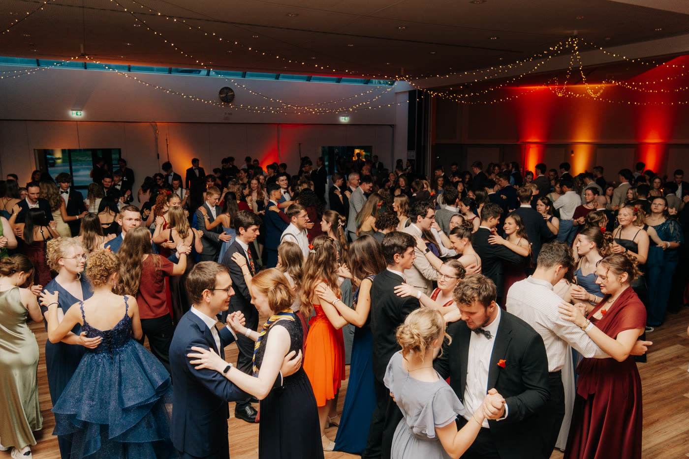
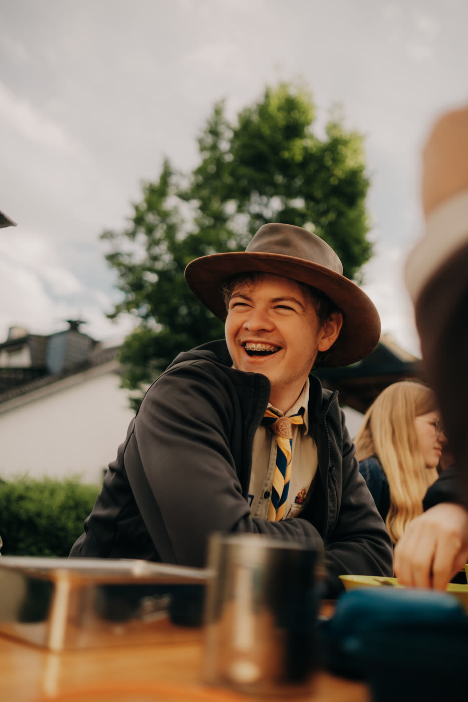
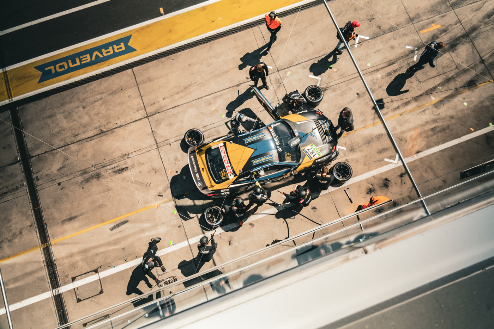

Welche Fotografie bietest du in Wiesbaden an?
Zu meinen fotografischen Arbeiten gehören Porträts, Eventfotografie und Motorsportfotografie. Die gezeigten Motive geben einen Einblick in diese Bereiche.
Fotografie · Wiesbaden und darüber hinaus
Ich bin Jonas Heilmann, Fotograf aus Wiesbaden. Ich fotografiere Porträts, Veranstaltungen und Motorsport – aufmerksam für Persönlichkeit, Atmosphäre und den richtigen Moment.

Ob ein einzelnes Porträt, ein Abend voller Begegnungen oder schnelle Szenen an der Rennstrecke: Jedes Motiv braucht einen anderen Blick. Mich interessieren geplante Bilder ebenso wie die Momente dazwischen.


Für eine Anfrage helfen mir Anlass, gewünschte Bildsprache, Ort und Termin. So können wir gemeinsam klären, worauf es bei deinem Vorhaben ankommt. Umfang und Ablauf besprechen wir passend zum Projekt.
Zu meinen fotografischen Arbeiten gehören Porträts, Eventfotografie und Motorsportfotografie. Die gezeigten Motive geben einen Einblick in diese Bereiche.
Wiesbaden ist mein Ausgangspunkt; auf der Website beschreibe ich meine Arbeit ausdrücklich als in Wiesbaden und darüber hinaus. Teile den gewünschten Ort am besten direkt in deiner Anfrage mit.
Hilfreich sind Anlass oder Motiv, gewünschter Ort und Termin sowie eine kurze Beschreibung, wofür die Bilder gedacht sind. Dann lässt sich der passende Rahmen besprechen.
Nutze den Kontaktbereich auf der Startseite oder schreibe direkt an jofreheil@icloud.com. Ein paar Sätze zu deiner Idee reichen für den Anfang.